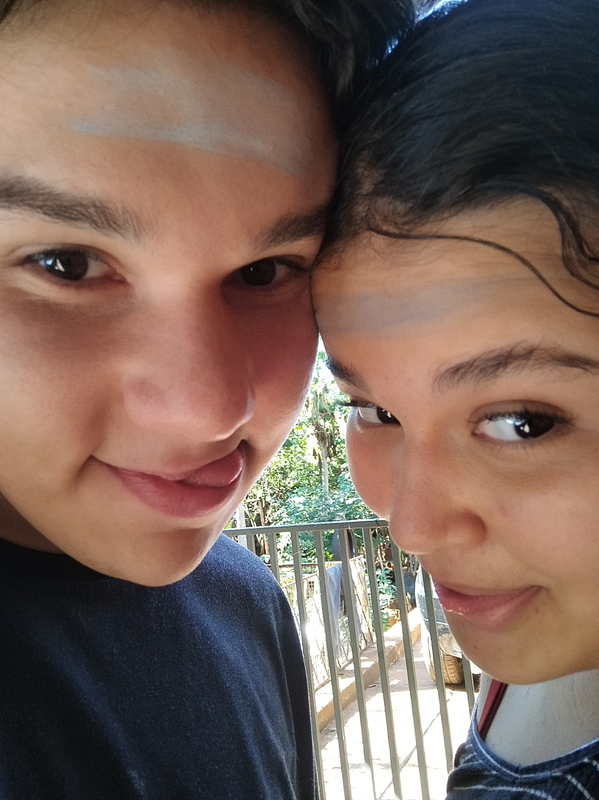

Parabéns, Bibia! Você chegou ao fim do quiz! 🎉
Um pouquinho sobre a gente...
←

→
Obrigado por brincar comigo! Espero que tenha gostado do quiz, foi feito com muito carinho só pra você.
Te amo demais, Bibia! 💖
— Tutu